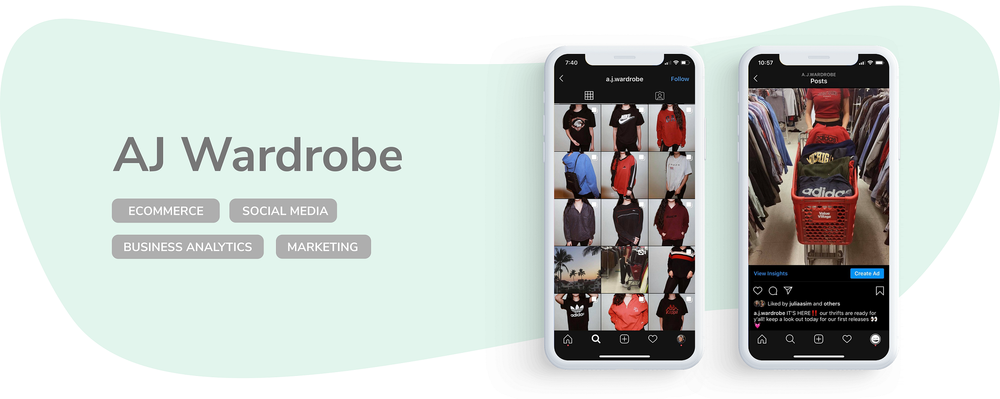
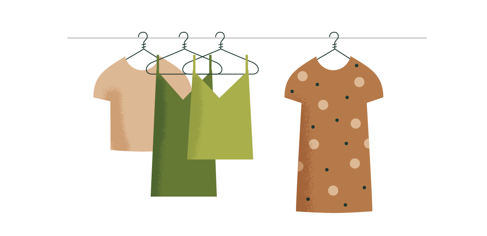
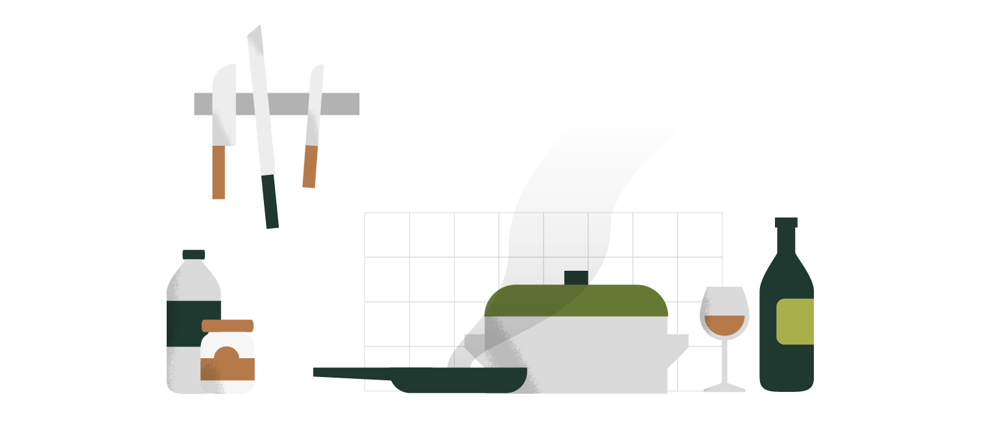
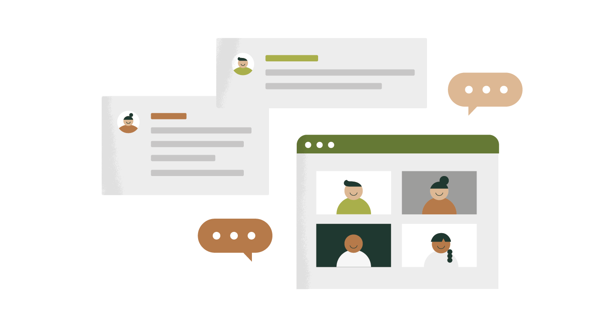
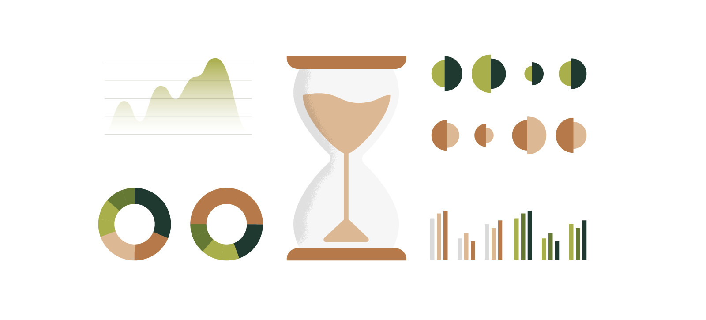
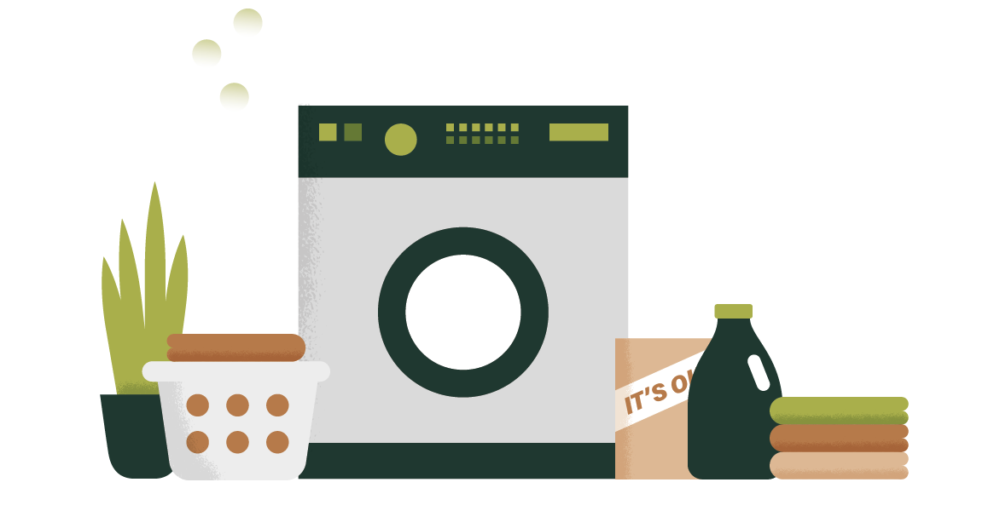

who
self employed
where
Toronto, Ontario
when
Sept 2017 - June 2019
(2 years)
(2 years)
how
Instagram
Lightroom
Keyhole
Lightroom
Keyhole
what
starting a business that redesigns and resells second hand clothing via Instagram
why
to advocate for sustainability shopping practices while transforming a passion into a profitable
business.
Background
My high school had an unspoken dress code: Lululemon leggings, a champion hoodie and Adidas
superstars. I, however, felt no desire to wear the same outfit as everyone else, let alone
wear the same outfit everyday. Not to mention, the brand name leggings, hoodie and shoes
racked up quite the price tag.
With that being said, my closet looked like the inside of a Forever 21, a slew of trendy clothes, basic tees in every imaginable colour, and cheap jewelry that I would have to repurchase every month or so.
Somewhere along the road, I stumbled across a TedTalk about waste in the fashion industry and I was inspired. I can only vouch for myself, but I’m sure a lot of us have fallen victim to the social norm of
With that being said, my closet looked like the inside of a Forever 21, a slew of trendy clothes, basic tees in every imaginable colour, and cheap jewelry that I would have to repurchase every month or so.
Somewhere along the road, I stumbled across a TedTalk about waste in the fashion industry and I was inspired. I can only vouch for myself, but I’m sure a lot of us have fallen victim to the social norm of
cheaper and faster = better
the clothing industry being no exception.
By this time I realized that there was a disconnect between my wardrobe and what I stand for. As a consumer, I can conscious choices and make deliberate purchases of what I need, what I want, and what makes this earth a more sustainable place.
By this time I realized that there was a disconnect between my wardrobe and what I stand for. As a consumer, I can conscious choices and make deliberate purchases of what I need, what I want, and what makes this earth a more sustainable place.
Solution: achieve my unique, frugal, and eco friendly style by thrifting.

Soon enough, my closet evolved into a diverse collection of vintage brands, statement pieces
and expensive jewelry. I was always extremely content and never guilty for my purchases. So many
good things came out of thrifting and I began to wonder why more people weren't shopping
second-hand! But I came to the realization that
thrifting is quite an exclusive hobby.
Not because it requires a specialized skill, but because thrifting is quite an
unpleasant experience. You’re essentially standing on your feet for hours, sifting through
used (and most of the time, not washed) clothing, just to find a few diamonds in the rough.
But I realized that I had a knack for thrifting; I’m patient, I have my own established
style, and I have a pretty solid “Price is Right” meter when gauging retail pricing.
Quickly, my small reach-in closet was not able to support my excessive thrifting habits as I reached a point where I couldn’t open my closet without expecting an avalanche of clothes to topple over me. I was ironically over-thrifting, thus, going against all of my eco-fashion ideals.
Quickly, my small reach-in closet was not able to support my excessive thrifting habits as I reached a point where I couldn’t open my closet without expecting an avalanche of clothes to topple over me. I was ironically over-thrifting, thus, going against all of my eco-fashion ideals.
Solution: avoid excessive thrifting by shopping for others.
I made a business, an ideal one at that. I had the potential to monetize one of
my favourite hobbies. Starting a business isn't as easy as one, two,three, but I was able to
break it down into four P's.
1. Product
I created a business where I would shop at local thrift stores like Value Village
and Salvation Army to snag the good finds. Essentially, I created a platform to sell clothes
at a higher price than what I found at the second-hand shop, but at a lower price than what
they would sell for at the mall.
Lesson Learned
My product wasn’t just the article of clothing, but it was the service of
thoughtfully picking each and every item by hand. I was selling a
service where I save my customers’ the trouble, thrift for them, and create a refined
collection of good finds; the highlight reel of thrift stores. Customer service is a product in
and of itself; it's like paying for a meal, not for the food itself, but for the
convenience and luxury of someone cooking it for you.

2. Promotion Plan and Platform
Social media, social media, social media. Teenagers were my target audience, so
social media was an obvious choice of platform. Instagram is a great platform for small
businesses to promote and sell products, as they offer analytical tools, demographic
statistics and inexpensive advertisements.
I stated off my promoting my business using my personal account. I would post Instagram stories with a screenshot of my business profile and tag my account, and I even asked my friends to do the same.
Soon after, the business gained a substantial following. My audience, who started off as just my close circle, grew to include complete strangers all over the GTA. I started launching promotional campaigns and limited time offers to spark growth and keep the ball rolling.
I stated off my promoting my business using my personal account. I would post Instagram stories with a screenshot of my business profile and tag my account, and I even asked my friends to do the same.
Soon after, the business gained a substantial following. My audience, who started off as just my close circle, grew to include complete strangers all over the GTA. I started launching promotional campaigns and limited time offers to spark growth and keep the ball rolling.

Lesson Learned
To be a thriving business on social media, I found these two things to be the most
important: engagement and tone. First off, you have to be
active. Not only would I post frequently, but I would create posts where my
audience can engage with me like surveys, polls, and Q and As in the comments section. The more
engagement your account generates, the more profit and customer trust you gain. Secondly, how
you communicate with your following is vital to your brand. Little things like
using emojis, greetings, and how you respond to comments determines how your audience perceives
you as a business. Not to mention, being polite yet firm when negotiating with clients in
private messages.
3. Profit
I began this journey by investing $100 from my own pocket to buy my first collection of items,
and I’ve never been in a deficit since. In one year, I sold over 100 pieces of thrifted clothing
and on most weeks, I yielded a 55% profit margin. I used spreadsheets to create budget plans and
to evaluate my business’ performance on a weekly basis.

Lesson Learned
For businesses like these, where clients often negotiate pricing, in order to make a
profit, it is vital to know your worth. When I genuinely believed that I
overshot one of my prices and a potential buyer began to negotiate with me, I
definitely considered it. This in itself holds value as it demonstrates empathy, transparency
and reason to your users. However,
there is a fine line between being empathetic to your customers and being settling for less.
I know my products and services are worthwhile, and so when I knew that
someone was “low-balling” me, I stood firm and I would politely decline.
Treading this line was definitely something that took time to get the hang of, but it's an
essential skill in order to make and maintain a profit margin.
4. Putting in the work
every weekend, I would:
once the posts went live, I would:
along with the ongoing cycle of:
The End?
There reached a point where I wanted thrifting to serve as just a hobby again.
Juggling school, university applications, full time competitive dancing, a part time job,
and a clothing reselling business was simply too much to handle. And not to be dramatic, but the
amount of laundry I did was insane. Long story short, AJW was put on the back burner.

However, this is not the end.
Although there has been a halt in sales (considering I haven’t been active in over a year
now), I have bigger and better plans for this business. I am currently rebranding my
business vision, and a website/mobile application is in the works!
I’ve begun my design process, from research to sketches to usability testing, and if you’re interested in seeing how I’m planning on turning my high school hobby into something much larger, click here!
I’ve begun my design process, from research to sketches to usability testing, and if you’re interested in seeing how I’m planning on turning my high school hobby into something much larger, click here!
still curious?
designed and developed by Julia Sim 2020